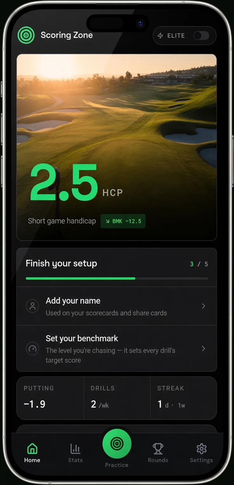
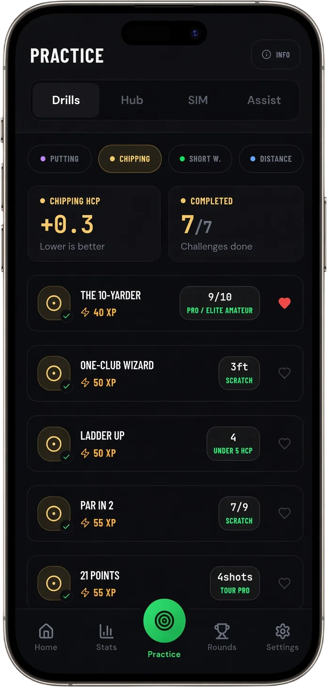

Golf Basics

Average Golf Score: What’s Normal at Every Level
What US golfers actually shoot, by score, handicap and gender
April 9, 2026 · Updated November 2026 · 9 min read · Stephen Pickering
What US golfers actually shoot, by score, handicap and gender
April 9, 2026 · Updated November 2026 · 9 min read · Stephen Pickering
Key takeaway: The average golfer who keeps score shoots 94: 93 for men and 99 for women (National Golf Foundation, 2024). 38% average under 90 and 11% average under 80. Your handicap isn’t your average score, though. Most golfers average about three shots above their Course Handicap.
If you keep score, the average 18-hole round in the US is 94. That’s from the National Golf Foundation’s August 2024 survey of golfers who regularly keep a card: 93 for men and 99 for women. 38% of them average under 90, and 11% average under 80.
This page used to quote a lower average, credited to the USGA. I couldn’t trace it to anything the USGA has published, so it’s gone. Every number below links to where it came from.
Below: how scores actually split, what your handicap says about your average, the gap between men and women, and what separates each scoring bracket. Put your own score in first.
Enter your typical 18-hole score to see where it ranks among US golfers who keep score, and roughly what handicap it points to.
Source: National Golf Foundation, August 2024, self-reported by US golfers who regularly keep score. The NGF publishes ten-shot bands, so inside a band we assume golfers are spread evenly. Treat the percentage as an estimate. The handicap figure uses Lou Stagner’s three-shot rule, explained below, and is a rough guide.
The NGF asked golfers what they usually shoot over 18 holes. Their average scores split like this:
Add them up and 38% average under 90, and 69% average under 100. The overall average is 94.
Three honest caveats, all from the NGF itself. These scores are self-reported. More than half of golfers admit to taking liberties: mulligans, gimmes, the odd breakfast ball. And 23% of golfers don’t keep score at all, including 32% of occasional golfers, the ones who play one to seven rounds a year. Weight for all of that and the NGF reckons the real average golfer is “closer to triple figures than the mid-90s.”
You may also have seen “the average golfer shoots 100”. That came from much older NGF research with a smaller sample and a vaguer question. The figures above replace it.
So if you keep an honest card and shoot in the low 90s, you’re a touch better than the average golfer who keeps score. Not behind.
This is where most golfers get it wrong. Your handicap is not your average score.
Your Handicap Index is the average of your best 8 of your last 20 score differentials, so it measures a good day. The USGA has long said golfers play to their handicap only about 20 to 25% of the time. Golf statistician Lou Stagner, working from Arccos data, uses a simple rule of thumb: your scoring average is about three shots higher than your Course Handicap.
So there are two columns here, not one. On a par-72 course with a Course Rating of 72 and a Slope of 113, your Course Handicap is the same as your Index, and this is roughly what to expect:
| Handicap | A good day | Typical average |
|---|---|---|
| Scratch (0) | 72 | 75 |
| 5 | 77 | 80 |
| 10 | 82 | 85 |
| 15 | 87 | 90 |
| 20 | 92 | 95 |
| 25 | 97 | 100 |
| 30 | 102 | 105 |
A good day is par plus your handicap. The typical average adds Stagner’s three shots. Real courses won’t match that setup exactly, and some golfers are more consistent than others, so treat it as a rough guide, not a promise. A 15-handicapper who averages 90 will still shoot 85 one week and 96 the next.
It also explains a gap between two sets of numbers on this site. Not sure how your handicap compares? Here’s the average golf handicap by age and gender, from the USGA’s 2025 data. The average man with an index is a 14.0, which on the course above works out at an average of about 89. That’s a few shots better than the NGF’s 93, and it fits: the USGA says golfers who keep an index lean towards the keener players.
The NGF splits its numbers by gender. Men who keep score average 93. Women average 99.
Look at the top end. Almost as many women as men average under 80. The difference sits in the 100-plus group, where nearly half of women land.
Raw scores don’t account for which tees someone plays, how long the course is or how often they get out, so don’t read too much into the six-shot gap. Levelling that out is exactly what the handicap system is for.
What I’d take from it is the same for both. The shots you can improve fastest are the ones from 50 yards in, because none of them need clubhead speed.
I’d love to give you a table here. There isn’t an honest one. The NGF splits its scoring data by gender, not age, and the USGA doesn’t publish average handicaps by age either.
The age table that used to sit on this page didn’t trace back to any published data, so I’ve taken it down. If a reliable data set turns up, I’ll add it.
What the data does show is distance dropping as you get older, which I’ve covered in the average golf handicap by age guide. Lost distance means longer approaches, more missed greens and more chips. That’s good news, in a way, because chipping and putting don’t need speed.
If you’re over 50 and worried about losing yards, your scores are waiting on the practice green, not in the gym.
31% of golfers who keep score average 100 or more, so if that’s you, you’ve plenty of company. The difference between a 102 and a 92 is almost never the quality of the good shots. It’s the number of bad holes. The 102 card has a cluster of doubles and a triple or two. The 92 card has the same swing but keeps the big numbers off.
How? Better chipping when they miss greens. Fewer three-putts. One less penalty shot a round. These are short game and decision-making improvements, not swing improvements.
If breaking 90 is your target, the real numbers on how many golfers do it are in what percentage of golfers break 90.
Breaking 90 regularly is a short game job. Using Stagner’s three-shot rule, averaging under 90 on a par 72 takes a Course Handicap of roughly 14 or better, and 38% of score-keepers manage it. A golfer in the 90s misses most greens, so the chip and the first putt come up again and again. Turn a few more of those into up-and-downs and the card changes without touching your swing.
Here’s a detailed breakdown of what counts as a good score at each level.
What Is a Good Golf Score? →Only 11% of golfers who keep score average under 80. At this level the difference is measured in feet: how close your chips finish, how often you two-putt from 30 feet instead of three-putting, how reliably you hole the 4-footers for par.
The golfers who get from the mid-80s into the 70s are the ones who practise with scoring systems, track their short game stats, and treat the practice green as seriously as the range. Talent gets you into the 80s. Deliberate practice gets you out of them.
Hitting driver on the range is satisfying. It feels like practice. But for a golfer averaging in the 90s, it’s the least useful practice there is. Most of the shots that separate you from the next bracket happen around the green.
In my experience, twenty minutes of scored chipping practice three times a week does more for your average than three hours on the range. You can’t rebuild your iron play in a short session. You can measurably improve how often you get up and down.
Your total score hides everything. A 91 with 14 pars and two triples is a completely different round to a 91 with 18 bogeys. The scorecard looks the same but the improvement path is entirely different.
Track putts per round, up-and-down percentage, greens in regulation, and three-putt frequency over 10–15 rounds. The stat that’s furthest from the average for your handicap is where your practice should go. Scoring Zone tracks all of this automatically — after two rounds, you get strokes gained data benchmarked against your handicap level.
Mindless repetition doesn’t transfer to the course. You need practice that creates consequences — drills with scoring systems, targets, and restart penalties. When there’s something on the line, your brain engages differently. That’s how you build the kind of short game confidence that holds up on the 17th hole with a card in your pocket.
Scoring Zone’s chipping and putting challenges are built around this principle. Every drill is scored, every session is tracked, and the XP system means progress is visible and measurable.
Here’s how to lower your scores without changing your swing.
How to Improve Golf Scores Without Changing Your Swing →The average amateur golfer who keeps score shoots 94 over 18 holes, according to the National Golf Foundation’s 2024 survey of US golfers: 93 for men and 99 for women. 38% average under 90 and 11% average under 80. The NGF reckons the true average, once you count golfers who don’t keep score, is closer to triple figures than the mid-90s.
94, for US golfers who regularly keep score (National Golf Foundation, 2024). That’s 22 over par on a par 72, a little worse than bogey golf. Men average 93 and women average 99.
Yes. Only 38% of US golfers who keep score average under 90, and the overall average is 94 (National Golf Foundation, 2024). If 90 is your usual score, you’re better than the average golfer who keeps a card.
Most golfers average about three shots above their Course Handicap, so a golfer who averages 90 on a par 72 usually has a Course Handicap of about 15. Your Handicap Index is built from your best 8 of your last 20 rounds, so it reflects a good day, not your average.
Nobody publishes average golf scores by age. The National Golf Foundation splits its scoring data by gender, not age, and the USGA doesn’t publish average handicaps by age either. A fairer target at any age is the average for your gender: 93 for men and 99 for women who keep score.
There’s no published average for beginners. The NGF found that 23% of golfers don’t keep score at all, mostly occasional players, so beginners are largely missing from the averages. A sensible first target is breaking 100: 69% of golfers who keep score average under 100.
Work on the shots around the green. A golfer in the 90s misses most greens, so chips, pitches and the first putt come up again and again, and they respond to practice far faster than a swing change. Score your practice so you know whether it’s working, not just whether it felt good.
7 days free
Then from $4.99/month · Cancel anytime
Start your 7-day free trial
35+ drills & tests · Short Game Handicap · Performance tracking


